2025年3月 第1回 回覧板
目次
回覧文書
1. 収集日の確認には「ごみカレンダー」をご活用ください ※ごみカレンダーの配布あり

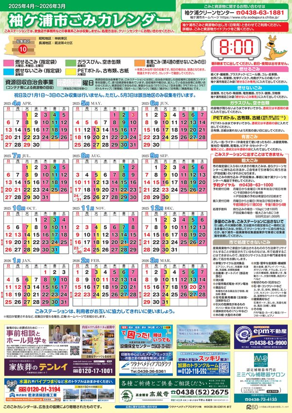
2. 令和７年度袖ケ浦市税等納期一覧（普通徴収）
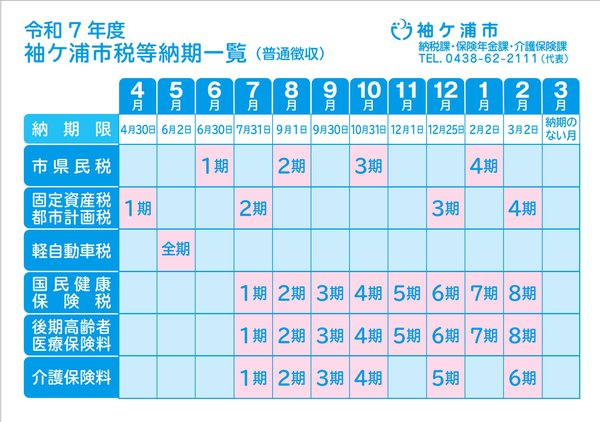
3. 「資源物」の回収曜日について
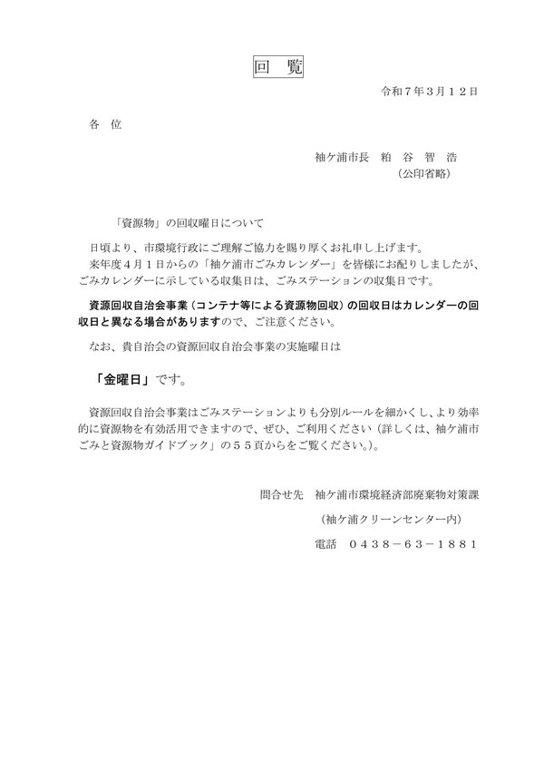
4. 「思いやり交通千葉」第１９２号

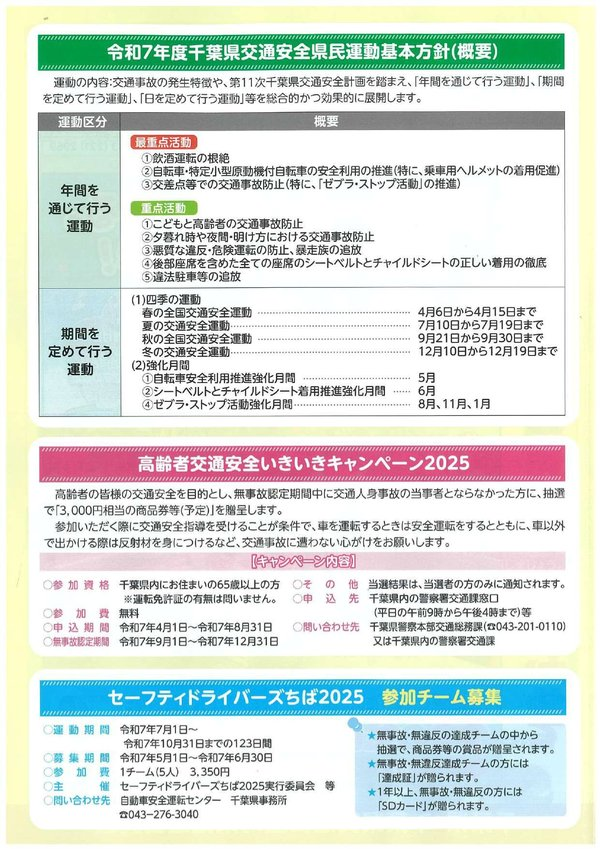
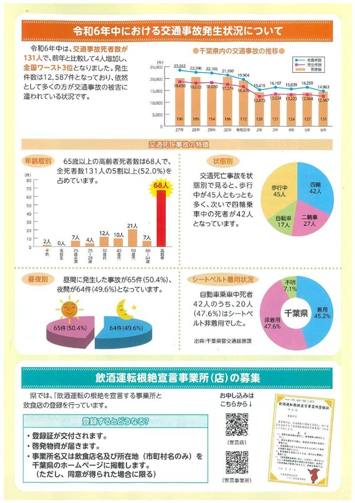
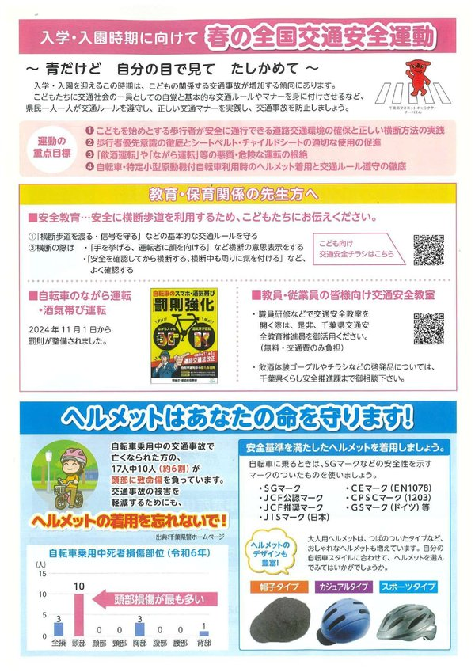
5. 「ガウランドの指定管理者変更」及び「新生ガウランド施設内覧会」チラシ


6. 「地域安全ニュースふれあい第３４８号」及び「犯罪発生地図」

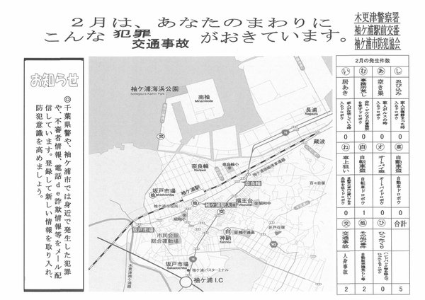
7. 「そでがうらスプリングフェスト２０２５」及び「第４回そでがうらまつり～アレワイサノサ～」チラシ
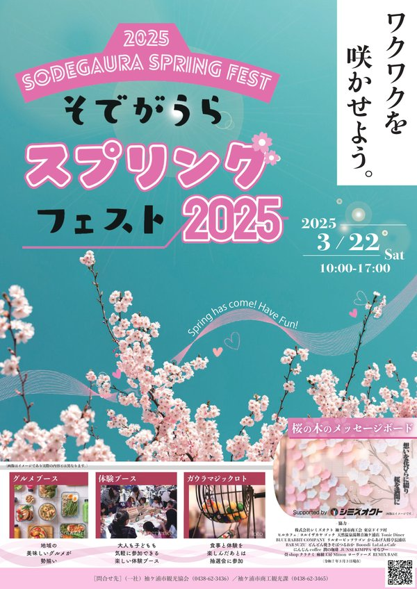
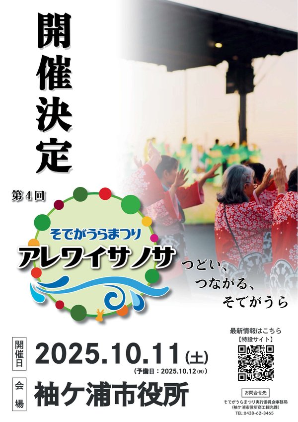
8. 「家族介護教室（４月分）」チラシ

9. 君津中央病院広報誌「クローバー」vol.７６


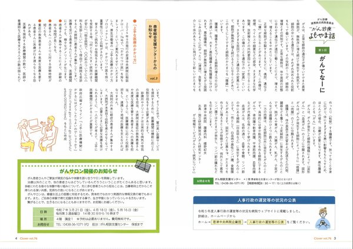

10. 広報紙「普及だよりきみつ」第３６号
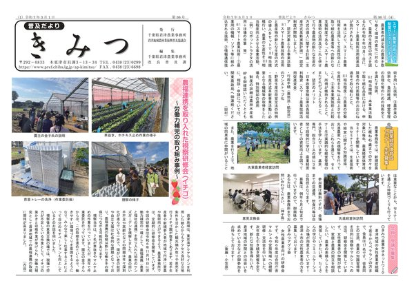
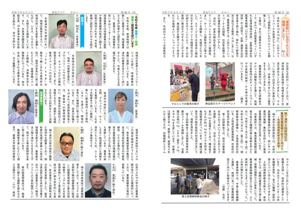
← トップページに戻る